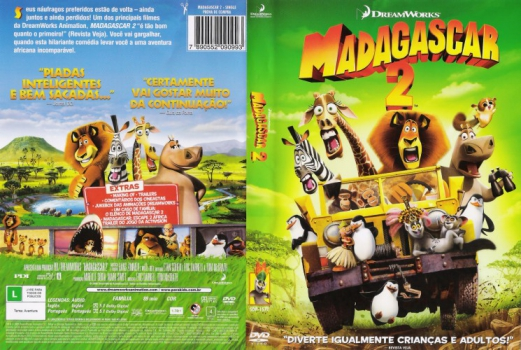

Outro Título:Madagascar: Escape 2 Africa
País:United States, 89 minutos
Idiomas falados:Inglês, Português
Gênero(s):Aventura, Animação, Comédia, Família
Diretor(s):Tom McGrath, Eric Darnell
Escritor(es):Etan Cohen, Tom McGrath, Eric Darnell
Codec:MPEG-2 (DVD)
Número: 5803


Certificado:L
Sinopse:
Alex e seus amigos tentam voltar para casa, mas o avião em que eles estavam cai no meio da savana africana. A partir daí, muitas aventuras acontecem nessa viagem selvagem de volta ao lar.
Elenco:


Tipo de mídia: DVD5,
Legendas: Inglês, Português, Sem Legendas
Alugado: Não
Tela: Anamorphic Widescreen